Configuring Noise Samplers#
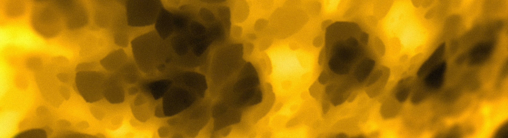{kind=link}
When configuring config packs, many parameters will require a NoiseSampler.
The simplest NoiseSampler config just requires a type, which defines what kind of sampler to use.
The white noise sampler has type WHITE_NOISE, and can be used like so:
type: WHITE_NOISE
When used in the context of a parameter, it may look like this:
example-noise-sampler-parameter:
type: WHITE_NOISE
Parameters#
Different noise samplers specified by the type key will also have other keys that become available
as either required or optional within the noise sampler config.
Required keys need to be specified to be valid configs, others like WHITE_NOISE don’t require anything extra.
Common Noise Sampler Parameters#
Salt#
One example of an optional parameter available when specifying the WHITE_NOISE type is salt. The function of salt is
covered here.
Here is what the above example looks like with the salt key added:
type: WHITE_NOISE
salt: 2321
All optional parameters have pre-defined default values that are set when they are not specified.
When the salt key is not included in a sampler config, it will default to its predefined value 0.
Noise Tool#
Now that we know how to write a simple sampler config, we can use a handy program aptly named the Noise Tool to preview what our config looks like.
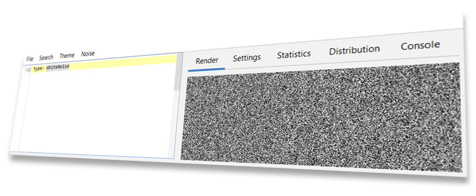{kind=link}
The Noise Tool was specially designed for creating, previewing, and modifying samplers, and is also what was used to generate every image of noise used on this page. You can find the Noise Tool on GitHub - Source / Download
Warning
The NoiseTool does not include any addons by default. When running the Noise Tool, the folder you run it from
will require an addons folder. (This will be created when starting the tool if you do not create it yourself.)
You should copy the bootstrap folder and the config-noise-function addon from your Terra installation to the Noise Tool’s
addon folder, those of which can be found in Terra/addons.
Tip
We suggest that you follow along the rest of this section with the Noise Tool, so you can try out parameters get the hang of writing your own sampler configs. Playing around and experimenting on your own is a great way of learning what each parameter does, and will give you an intuition on how you can fine tune them to your advantage.
For a complete list of sampler types and their parameters available in Terra, please refer to the NoiseSampler page.
Frequency#
Frequency is a number that modifies the ‘scale’ of sampler outputs, where higher frequency produces more ‘zoomed out’ outputs, while lower frequency results in more ‘zoomed in’ outputs.
Let’s preview some comparisons of a simplex noise sampler with varying frequencies:
2x Frequency
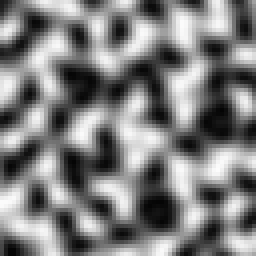1x Frequency
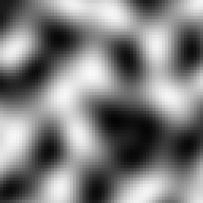0.5x Frequency
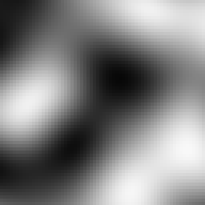As a general rule of thumb:
Higher Frequency
Zooms out.
Produces smaller & closer details.
Increases the density of ‘points’ per unit of space.
Lower Frequency
Zooms in.
Produces larger & more spread out details.
Decreases the density of ‘points’ per unit of space.
Frequency can be defined for applicable NoiseSamplers via the frequency key like so:
type: <Sampler Type>
frequency: <Desired Frequency>
Note
Tweaking frequency is only really useful for samplers in the coherent noise category. You’re able to modify the frequency of random noise based samplers, however they don’t have the property of being able to scale like coherent noise samplers do. There isn’t much reason to scale the frequency of a random noise sampler, as doing so functionally has same effect as changing the seed.
Under The Hood - How frequency works
The math behind frequencies is very simple: multiply the input coordinates of a sampler by the frequency. Here is a model of the process:
For example, if we have a frequency of 2, and want to sample the coordinates (X = 3, Z = 2), first the coordinates will be multiplied by the frequency 2, giving us the scaled coordinates (X’ = 6, Z’ = 4). This new set of coordinates will then be input into the sampler which will then give us the final output value.
Based on this logic, we can deduct that the input:
(X = 3, Z = 2, Frequency = 2)
Will give the exact same output when inputting:
(X = 6, Z = 4, Frequency = 1)
Higher frequencies effectively produce faster changes when incrementing input coordinates, which is why higher frequencies make details closer and therefore smaller.
This concept in geometry is known simply as scaling, and can also be thought of as applying a scale transformation to the coordinate space of the world before passing it into the sampler.
Samplers In Context#
To get a better idea of how sampler configs get used in packs, Here is what one looks like in the context of a palette configuration. The sampler config is highlighted:
id: DIRTY_GRASS
layers:
- # Single layer of grass and dirt blocks
layers: 1
materials:
- "minecraft:grass_block": 1
- "minecraft:coarse_dirt": 1
sampler:
type: OPEN_SIMPLEX_2
frequency: 0.05
- # Two layers of dirt below the top layer
layers: 2
materials: "minecraft:dirt"
- # Then finally stone
layers: 1
materials: "minecraft:stone"
The usage of noise here controls the arrangement of the weighted list of materials. To get a better idea of the relationship, here is a screenshot of a biome which uses the above palette configuration:
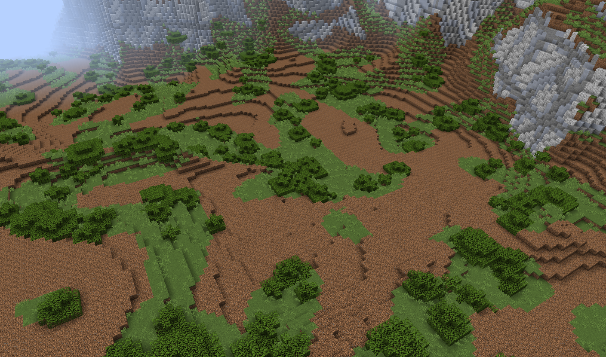Other Noise Sampler Techniques#
Fractalization#
In some situations, coherent noise on its own may be far too smooth and uniform to produce ‘realistic’ results. Looking at the images above, you may notice plain simplex is quite blobby, which may not be desired for applications where more detail is required. This is where fractalizers come in handy.
The gist of fractalization is to combine multiple layers of noise from the same sampler together, where each layer (called an octave) has a higher frequency and less influence (making it contribute less to the overall output). This process of creating a fractal effect is referred to as fractal Brownian motion (Commonly abbreviated as fBm).
No Fractalization
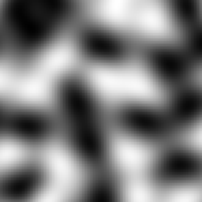2 Octaves
3 Octaves
4 Octaves
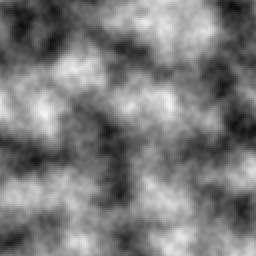As you can see, the more octaves we add, the more detailed the noise gets. Adding detail, especially for very low frequency noise, is the main application of fractalization.
When fractalizing sampler configs, we define the fractalizer as its own sampler config, which takes the target sampler config as a parameter. The syntax for this is as followed:
type: <Fractalizer Type>
sampler:
type: ... # Sampler config to be fractalized
As you can see, we have the main sampler config for our fractalizer, and a second sampler config nested inside under the
sampler key. The sampler key is the only required parameter for all fractalizers.
Here is an example of the FBM fractalizer, with OPEN_SIMPLEX_2 as the input sampler:
type: FBM
sampler:
type: OPEN_SIMPLEX_2
Pretty simple, all we’ve done is passed some simplex noise into the FBM sampler. Fractalizers have a couple
additional parameters, including octaves, lacunarity, and gain. Here is another example config with those
parameters already defined:
type: FBM
sampler:
type: OPEN_SIMPLEX_2
octaves: 3
lacunarity: 2
gain: 0.75
Feel free to preview this config in the Noise Tool, and have an experiment with each parameter to see what they all do.
To see all available fractalizers and their parameters, please refer to the NoiseSampler page.
Domain Warping#
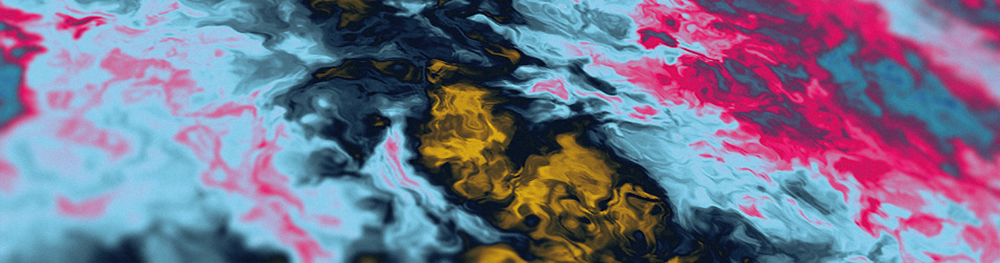{kind=link}
Similar to fractalization, domain warping involves taking a sampler and modifying it in some way. More specifically, domain warping allows you to warp the output of one sampler with another ‘warping sampler’.
To demonstrate, let’s take a 64 x 64 square of samples in a space. Our sampler to be warped will be a checkerboard pattern, and our warping sampler will be some basic simplex noise.
Sampler To Be Warped
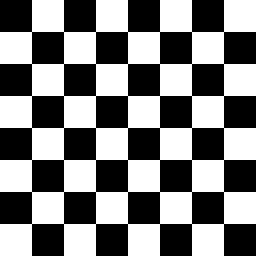Warping Sampler
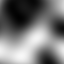When domain warping the checker board sampler by the simplex we get the following result:
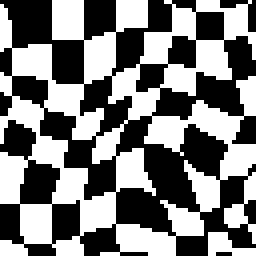As you can see, our once perfectly square boxes have been contorted out of shape by the warp sampler.
To use domain warping, we will need to set the type to DOMAIN_WARP, and specify two additional required keys
sampler and warp. As you may have already guessed, both sampler and warp need to be set to a sampler config,
similar to how fractalizers accept an input sampler:
type: DOMAIN_WARP
sampler:
type: ... # Noise config to be warped
warp:
type: ... # Warp noise config
Additionally, we can specify amplitude which determines how strong the warping effect is.
Here is an example of a real sampler config which warps low frequency simplex with another simplex
sampler:
type: DOMAIN_WARP
sampler:
type: OPEN_SIMPLEX_2
frequency: 0.005
warp:
type: OPEN_SIMPLEX_2
amplitude: 20
Again it’s recommended that you try out this sampler config in the Noise Tool and see what changing each
parameter does - What happens if you use WHITE_NOISE as a warp sampler instead?
Under The Hood - The Math Behind Domain Warping
To get an in depth understanding of what’s happening, let’s explain the formula that is used to achieve domain warping:
We will define
sampler(coordinate)as our sampler to be warped, wherecoordinaterepresents the input values (such as the familiar X and Z coordinates).To translate
sampler, we can simply add some translation to the input:sampler(coordinate + translation). Translating simply means moving left / right / up / down / etc.We can then define
warp_sampler(coordinate)as our warping sampler.If we make
translationourwarp_samplersampler then now thecoordinateofsamplerwill be translated bywarp_samplerlike so:
sampler(coordinate + warp_sampler(coordinate))
Finally, we can multiply the output of
warp_samplerby a valueamplitude, which will control how ‘strong’ the warping will be, to give us the final formula:
sampler(coordinate + warp_sampler(coordinate) * amplitude)
A detail to note is that there will typically be several copies of warp_sampler for each coordinate for the domain,
where each copy is just salted differently. Without this, each coordinate would be warped by the same value, resulting
in translating each axis equally, resulting in anisotropy.
Sampler Composition#
Because some keys such as sampler and warp accept a sampler config, something we can do is feed a
domain warp sampler into another domain warp sampler. In fact, we could feed any sampler
into any other one, given it has a parameter that accepts a sampler config. This is incredibly powerful, as it
allows for constructing complex highly configurable systems of samplers. Here is an example where we domain warp some
fractalized simplex by more fractalized simplex (which has also been domain warped by more…
fractalized simplex!):
type: DOMAIN_WARP
amplitude: 300
sampler:
type: FBM
sampler:
type: OPEN_SIMPLEX_2
frequency: 0.002
warp:
type: DOMAIN_WARP
amplitude: 20
sampler:
type: FBM
sampler:
type: OPEN_SIMPLEX_2
frequency: 0.003
warp:
type: FBM
sampler:
type: OPEN_SIMPLEX_2
frequency: 0.02